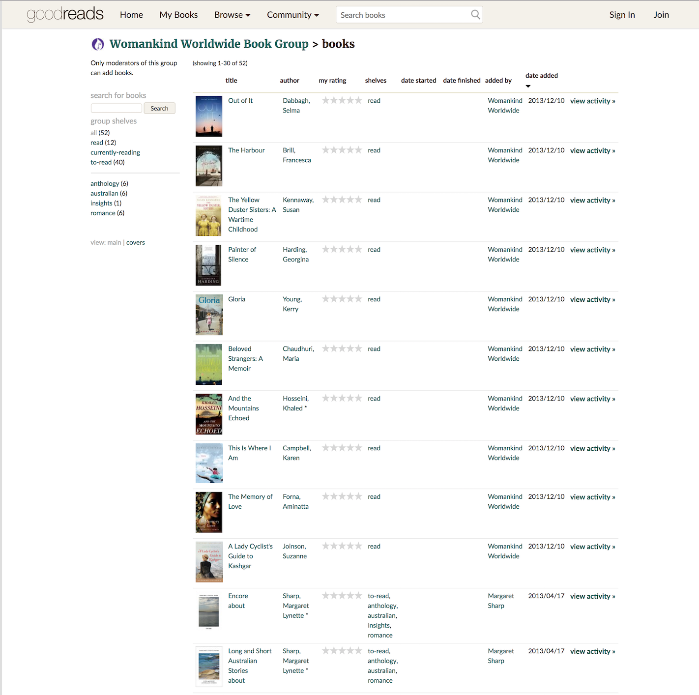
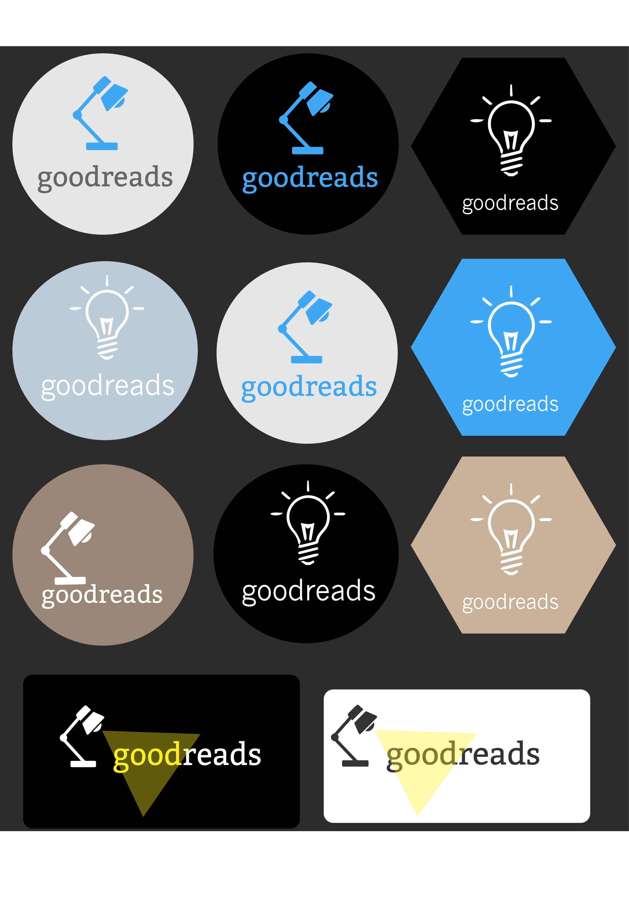
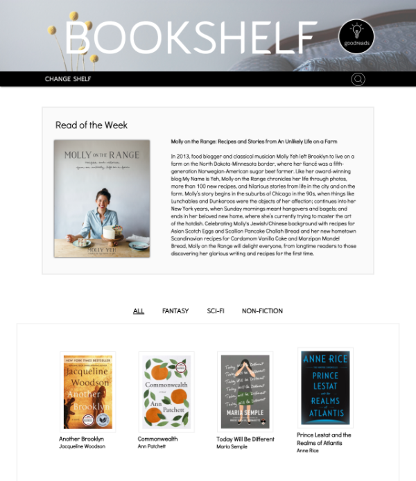

Current Goodreads Website
Logo Design Brainstorm
Redesign: Desktop Screen

Illustrator
Photoshop
CSS
HTML5
Javascript
(1) Short usability test
(2) Redesign logo to reflect minimalist, inspirational aesthetic
(3) Design sketches, then mockups
(4) Responsive code using HTML5, CSS, and Javascript
This project was a redesign of the current Goodreads.com Bookshelf page for my TIY UI Design class. After some short usability testing, I learned that users found the current site cluttered, outdated, confusing, and unpleasant to use. Bookshelf is a design-only project that emphasizes minimalism, inspiration, and highlights the beauty of a collection of book covers, taking inspiration from the books on your shelf.`
My major challenge with the project was combining a minimalist aesthetic with functionality while still ensuring that the site felt grounded. More complex designs, while fun to code, did not respect the results of the user research I had conducted.